1はじめに・対応環境
HamLogJP は、アマチュア無線とフリラー（デジタル簡易無線・CB・特小・LCR ほか）の交信記録を、1つのアプリで管理できる日本語のログアプリです。iPhone・iPad・Mac でネイティブに動作します。
- アカウント登録は不要です。すぐに使い始められます。
- 交信ログは端末内に保存され、外部に送信されません。iCloud 同期をオンにすると、ご自身の iPhone・iPad・Mac 間でログを共有できます（Apple ID の iCloud を利用）。
- 無料版で交信ログ 200 件まで、基本機能をお試しいただけます。ADIF 入出力や QSL 管理などはプレミアム版の機能です（第13章）。
1.2.2 の主な変更：コンテスト機能を強化。大会を選ぶと期間・バンド・モード・交換ナンバー・重複判定・ログ形式・提出方法を自動で切り替え、JARL電子ログ R1.0／R2.1 と Cabrillo 3.0 に対応、JLRS・430SSB祭り・CQ WW RTTY・オール岡山・福岡・ギガヘルツ・長野県QSOパーティー・オール秋田に対応（第7章）。
1.2.1 の主な変更：QSL管理を刷新（紙QSL・hQSL・eQSL・LoTW・QRZ・Club Log の状態と履歴を交信ごとに管理、QSLカードのPDF作成・印刷、写真からの受領記録、QRZ.com・eQSL.cc への送信、LoTW 用ファイルと確認の取り込み。第9章）、交信ログの一覧を「すべて／アマチュア／フリラー」で切り替え（第2章）、ADIF 3.1.7 のQSL項目に対応（第8章）。
1.2.0 の主な変更：よく使う項目だけをまとめた新しいログ入力画面、画面下に常に出る保存ボタン、アマチュア・フリラーそれぞれの前回条件の自動復元、運用条件のプリセット、Mac のキーボード操作（⌘↩ で保存して次へ など）、Mac の文字サイズ設定、.adi ファイルを「HamLogJP で開く」だけで取り込み。
2画面の構成
本アプリは端末と画面の幅に合わせて2つのレイアウトで動作します。
Mac・iPad は3ペイン
左に機能メニュー、中央に交信ログの一覧（検索欄つき）、右に選んだ機能の画面が並びます。過去の交信を見ながら、そのまま次のログを入力できます。一覧の交信をクリックすると右側に詳細が開き、上部の「‹ 戻る」で元の画面に戻れます。
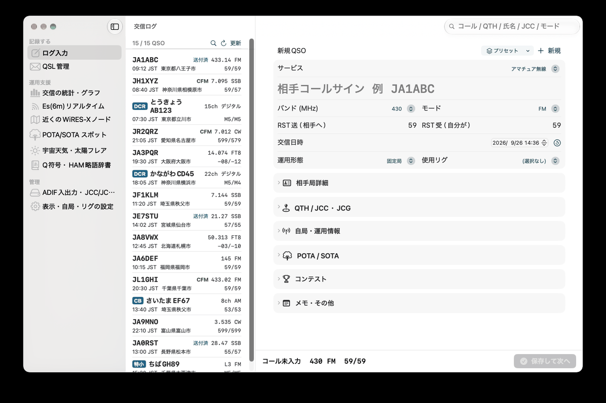
Mac版：左メニュー／中央ログ一覧／右ログ入力の3ペイン
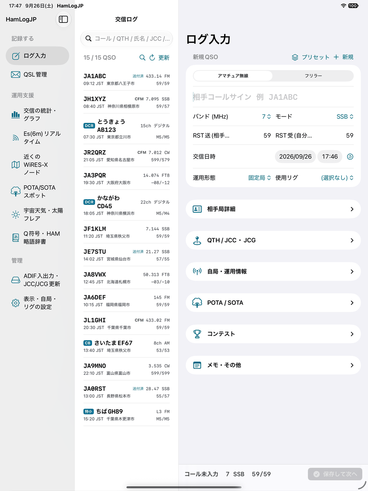
iPad版も同じ3ペイン。Split View などで幅が狭いときは iPhone と同じ画面に自動で切り替わります
交信ログの一覧を種別で切り替え
交信ログの一覧（Mac・iPad は中央、iPhone は「検索・一覧」）の上にある すべて／アマチュア／フリラー で、表示する交信をワンタップで切り替えられます。検索と組み合わせて使えます（例：「アマチュア」＋「JL1」）。件数は「表示中の件数 / 全件数 QSO」で表示します。画面を開き直すと「すべて」に戻ります。表示を切り替えるだけで、交信データは変わりません。
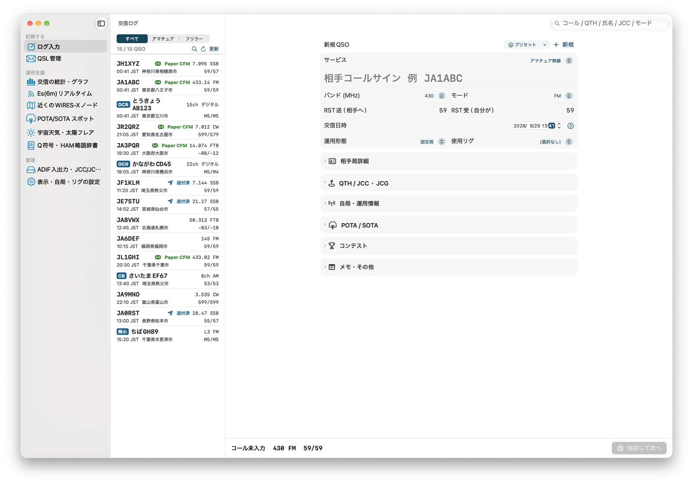
一覧の上の「すべて／アマチュア／フリラー」（Mac）
Mac でウインドウを閉じてしまったときは、メニューの「新規ウインドウ」（⇧⌘N）で開き直せます。
iPhone は片手で速記
画面下のタブで ログ入力／検索・一覧／QSL管理／メニュー を切り替えます。統計・POTA/SOTA・Es現況・データ入出力・設定などは「メニュー」から開きます。
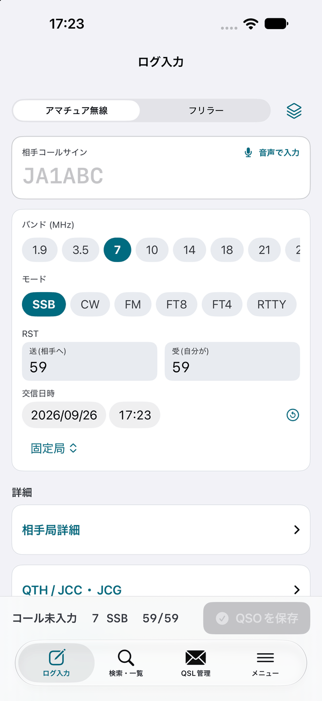
ログ入力（アマチュア無線）
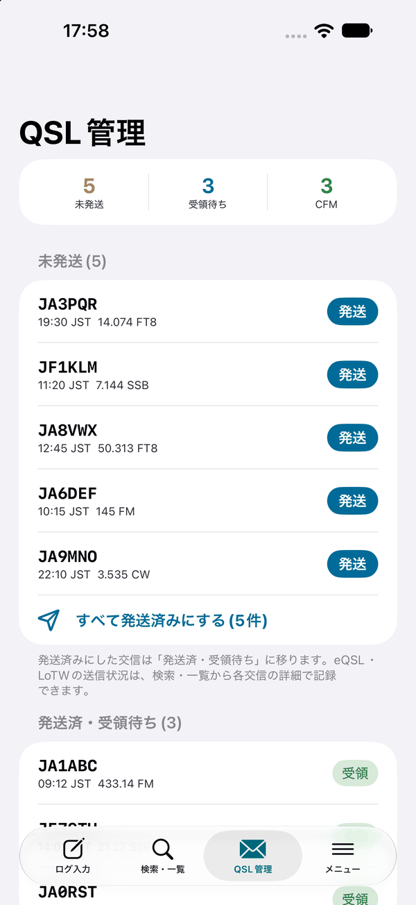
QSL管理（下のタブから）
3交信を記録する
「ログ入力」画面には、ふだんの交信に必要な項目だけが並びます。通常の交信はこの画面だけで保存できます。基本の流れは ①サービスを選ぶ → ②相手コール → ③バンド・モード → ④RST → ⑤保存 です。
サービスの切り替え
画面上部で アマチュア無線 と フリラー を切り替えます（Mac・iPad は「サービス」欄）。切り替えると入力欄がそれぞれに合わせて変わり（アマチュアはバンド／モード、フリラーは無線種別／チャンネル）、それぞれ前回使った条件が自動で入ります。
相手コールサイン
一番上の大きな欄に相手のコールサインを入力します。iPhone では「音声で入力」も使えます（プレミアム版で、Apple Intelligence に対応した端末のみ。Mac と iPad の横長画面では使えません）。入力すると過去の交信回数や重複が表示されます（第5章）。
バンドとモード
iPhone ではバンド（MHz）とモードをタップ（チップ）で選びます。Mac・iPad ではメニューから選びます。モードには SSB/CW/FM/AM や FT8/FT4/RTTY などに加えて、デジタル音声モード（DV・D-STAR・C4FM・DMR）も用意しています。
入力画面に出すモードは「設定 › 表示するモード」で追加・削除できます（全48種から選択）。
RST・交信日時・運用形態
RST（送＝相手へ／受＝自分が受けた）、交信日時（初期値は現在時刻）、運用形態（固定局・移動など）、使用リグを入力します。
詳細（折りたたみ）
ふだん使わない項目は「詳細」にまとめて折りたたんでいます。開くと入力でき、閉じていても入力した内容の要約が表示されます。
| 項目 | 内容 |
|---|
| 相手局詳細 | お名前など相手局の情報 |
| QTH / JCC・JCG | 相手の住所。市区町村名・都道府県・かな・ローマ字・コードで検索して選べます（第5章） |
| 自局・運用情報 | 自局の運用地など |
| POTA / SOTA | 相手局・自局の公園／山岳（第6章） |
| コンテスト | 送信・受信ナンバー（第7章） |
| メモ・その他 | 自由記入のメモなど |
保存
保存ボタンは画面下に常に表示されます（iPhone は「QSO を保存」、Mac・iPad は「保存して次へ」）。左側に入力中の要約（例：「JA1ABC 7 SSB 59/59」）が出るので、スクロールせずに確かめて保存できます。保存すると相手コールなどがクリアされ、バンド・モードなどの運用条件はそのまま次の交信に引き継がれます。
保存に失敗したときは、入力内容を残したまま理由を表示します。
Mac・iPad のキーボード操作
| キー | 動作 |
|---|
| ⌘↩ | 保存して次へ |
| ⌘N | 新規QSO（入力欄をクリア） |
| ⌘F | 交信ログを検索 |
4フリラー（無線種別）
サービスを「フリラー」にすると、相手の呼出名称（例：とうきょうAB123）、無線種別、チャンネルを入力します。
| 無線種別 | 内容 | チャンネル |
|---|
| DCR | デジタル簡易無線（351MHz） | 1〜82ch から選択 |
| CB | 市民ラジオ（27MHz） | 1〜8ch から選択 |
| 特小 | 特定小電力（422MHz） | L1〜L11 / b1〜b9 |
| LCR | デジタル小電力コミュニティ | 1〜18ch から選択 |
| Zello | アプリ無線（スマホPTT・インターネット） | ルーム名を自由入力 |
| エアインカムライト | アプリ無線（IP・スマホPTT） | ルーム名を自由入力 |
Zello / エアインカムライトは固定チャンネルを持たないため、チャンネル欄が「チャンネル / ルーム名」の自由入力に自動で切り替わります。レポートは M5 などの形式で記録できます。
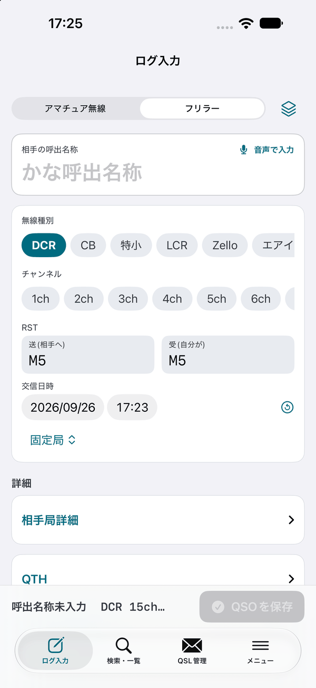
フリラー：無線種別とチャンネルをタップで選択
5入力を先回り（プリセット・前回値）
- 前回値の自動入力：アマチュア無線とフリラーそれぞれについて、前回の運用条件（バンド・モード／無線種別・チャンネル、レポート、リグ）を自動で復元します。
- プリセット：「430 FM 自宅」「DCR 自宅」のような運用条件（バンド・モード・無線種別・チャンネル・レポート・リグ・運用形態）を保存し、ワンタップで呼び出せます。iPhone はログ入力画面右上のアイコン、Mac・iPad は「プリセット」メニューを開き、「今の条件をプリセットに保存」で作成します。相手局の情報は保存されません。
- 過去の交信を自動表示：相手コールを入れると、その局との過去の交信が表示され、初回か何回目かも分かります。
- 重複の警告：同じバンド・モードで既に交信済みの場合に知らせます（コンテストや移動運用で便利）。
- JCC/JCG 内蔵：全国の市郡区 1,700 件超を内蔵。「QTH / JCC・JCG」で漢字・かな・ローマ字・コードの一部を入れると候補が出ます（例：「100」で東京都の市区）。
- エリア自動補完：JA1ABC/2 のようなコールから運用エリアを判定して補います。
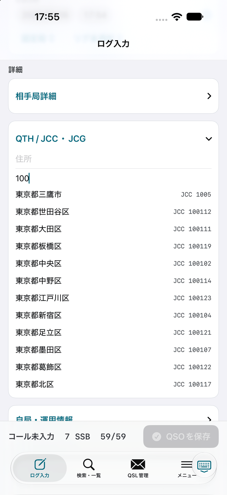
QTH：コードや地名の一部で JCC/JCG 候補を表示
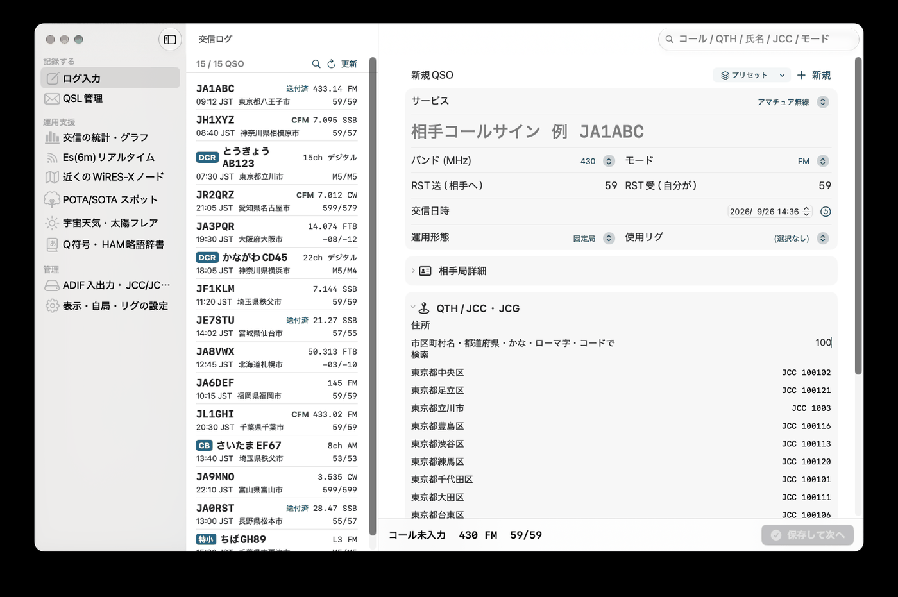
Mac版でも同じように候補から選べます
6POTA / SOTA
移動運用（POTA＝Parks on the Air、SOTA＝Summits on the Air）に対応しています。
- ログ入力の「POTA / SOTA」で、相手局の運用公園（ハント／P2P）や自局の運用公園を記録できます。
- POTA 公園コードを内蔵。番号や名前で検索して選べ、日本国内の公園は日本語名で表示されます。データは定期的に自動更新されます。
- 「POTA/SOTA スポット」画面では、いま運用中の局を POTA は地図、SOTA は一覧で確認できます（「日本のみ」で絞り込み）。地図の色は電話・CW・デジタルの区別です。
- スポットを開くと、コールサイン・公園・周波数・モードが表示され、「ハント（交信）としてログに保存」でそのまま記録できます。公園名は日本語名で入ります。
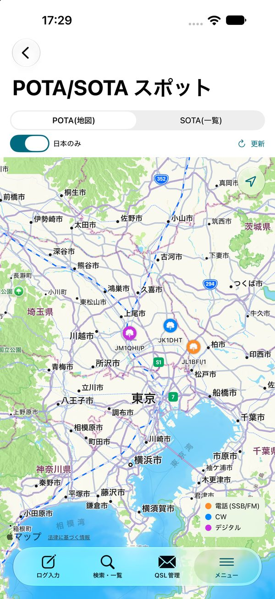
POTA/SOTA スポット（地図）
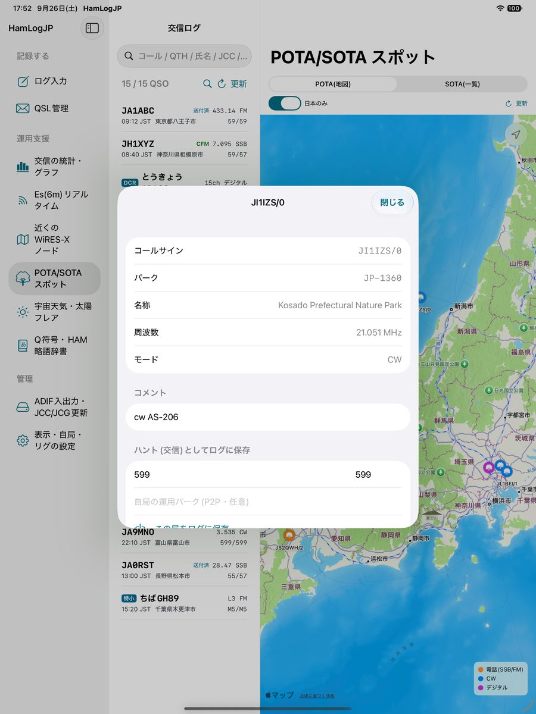
スポットの詳細から「ハント（交信）としてログに保存」
公園コードは、コード番号を入力するとその番号から候補を出して選べます（直接入力＋候補選択）。
7コンテスト提出ログ
大会を選ぶと、その大会の規約に合わせて対象期間・バンド・モード・交換ナンバーの説明・重複の判定・部門・ログ形式・提出方法が自動で切り替わります。「メニュー › データ」（Mac・iPad は左メニューの「ADIF入出力・JCC/JCG更新」）→「コンテスト提出ログ書き出し」から開きます。
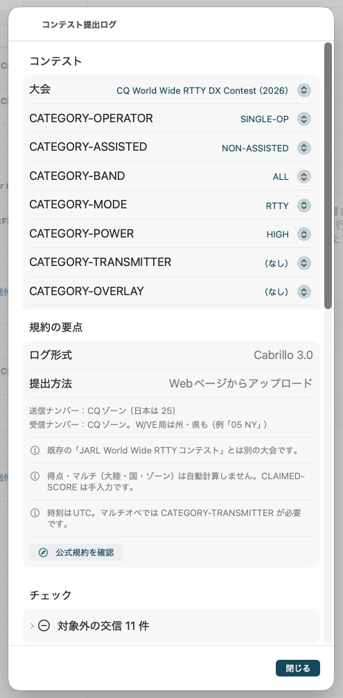
コンテスト提出ログ（Mac・CQ WW RTTY を選んだところ。一部省略）
対応している大会
| 大会 | ログ形式 | 提出方法 |
|---|
| ALL JA／6m AND DOWN／フィールドデー／全市全郡／ALL ASIAN DX／QSOパーティ／JARL World Wide RTTY／ウエルカムパーティ | JARL電子ログ R2.1 | 各大会の規約による（期間は自分で選択） |
| JLRS パーティーコンテスト | JARL電子ログ R1.0 | メール本文に貼り付け |
| 430SSB.NET 430SSB祭り | JARL電子ログ R2.1 | Webアップロード |
| オール岡山コンテスト | JARL電子ログ R2.1 | Webアップロード |
| 福岡コンテスト | JARL電子ログ R1.0 | メール本文に貼り付け |
| ギガヘルツコンテスト | JARL電子ログ R1.0 | メールまたは郵送 |
| 長野県QSOパーティー（後期） | 印刷・郵送用の一覧 | 郵送 |
| オール秋田コンテスト | JARL電子ログ R2.1 | メールまたは郵送 |
| CQ World Wide RTTY DX Contest | Cabrillo 3.0 | Webアップロード |
年によって日時・部門・提出先が変わる大会があります。画面の「公式規約を確認」から、提出前に必ず最新の規約を確認してください。
交信中の入力
ログ入力の「コンテスト」欄で大会を選ぶと、交換ナンバーの説明と、受信ナンバーに付ける記号のボタン（JLRS の M・Y、430SSB祭りの P など）が表示されます。送信・受信ナンバーには RST を除いた部分を入力します（RST は上の欄）。
提出ログの作り方
- 「コンテスト提出ログ」で大会と参加部門を選びます。期間は規約の運用時間が自動で使われます（既存の8大会は開始日・終了日を選びます。430SSB祭りの 9D 部門は連続9日間の開始日を選びます）。
- 「規約の要点」でログ形式・提出方法・交換ナンバー・注意事項を確認します。
- 「チェック」で、確認が必要な交信（重複の可能性・受信ナンバーの空欄など）と、対象外の交信（時間外・休止時間・対象外のバンドやモード・フリラー）を理由つきで確認できます。重複や規約外の候補は削除されず、確認のための表示です。
- 「得点」には、規約どおりに確実に計算できる大会だけ自動計算の値が出ます（「総得点の欄に反映」で入力欄に入ります）。相手が県内か県外か、大陸・国の判定などが必要な大会は自動計算しないので、総得点を手入力してください。
- 提出者情報（氏名・住所・E-mail など）を入力し、提出方法に合わせたボタンを使います。
- メール本文に貼り付け：「ログ本文をコピー」してメールに貼り付けます（JLRS・福岡など、添付ファイル不可の大会）。
- Webアップロード：「提出用ファイルを書き出す」で保存し、「提出ページを開く」からアップロードします。
- 郵送：「提出用ログを保存（印刷用）」や「印刷・共有」で印刷し、主催者の様式に従って郵送します（電子提出ではありません）。
HamLogJP がログを自動で送信することはありません。提出はご自身の操作で行います。
8データ入出力（ADIF / CSV）プレミアム
iPhone は「メニュー › データ」、Mac・iPad は左メニューの「ADIF入出力・JCC/JCG更新」から開きます。
- ADIF 書き出し（ファイル保存）／ADIF 読み込み：他ソフトとの交換や過去ログの移行に。
- ADIF を共有用に準備：AirDrop やメールで、iPhone で書き出して Mac へ直接受け渡せます（その逆も可）。
- 「HamLogJP で開く」だけで取り込み：ファイル・メール・AirDrop・CWデコーダー「DitLog」などで受け取った
.adi ファイルを、共有メニューなどから HamLogJP で開くと取り込めます。
- Turbo HAMLOG CSV 取り込み：HAMLOG の「CSV形式で出力」ファイルに対応。文字コードは UTF-8 / Shift_JIS の両対応。
- 読み込み時は「コールサイン＋分単位の日時」が一致する交信を重複としてスキップするので、同じファイルを二度読んでも増えません。
- ADIF 3.1.7 で書き出すと、QSL の状態と日付（紙・eQSL・LoTW・QRZ・Club Log）も一緒に出力します。ほかのソフトで付いた項目も、できる範囲で保持して書き出します。
- 同じ画面に交信数の統計と、JCC/JCG リストの更新があります。
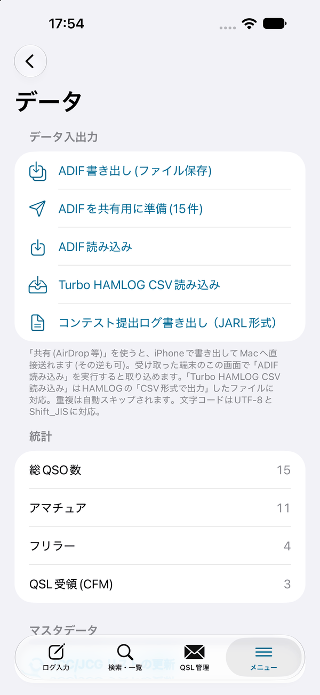
データ画面（iPhone）
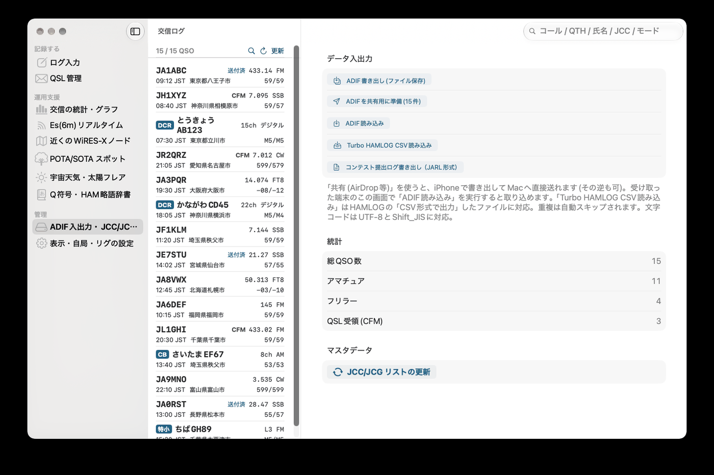
データ入出力（Mac）
9QSL 管理 プレミアム
紙QSL・hQSL・eQSL・LoTW・QRZ.com・Club Log の状態を、交信ごとにまとめて管理できます。iPhone は下のタブ、Mac・iPad は左メニューの「QSL管理」から開きます。外部サービスへの送信や取得は、すべてボタンを押したときだけ行い、自動では送りません。
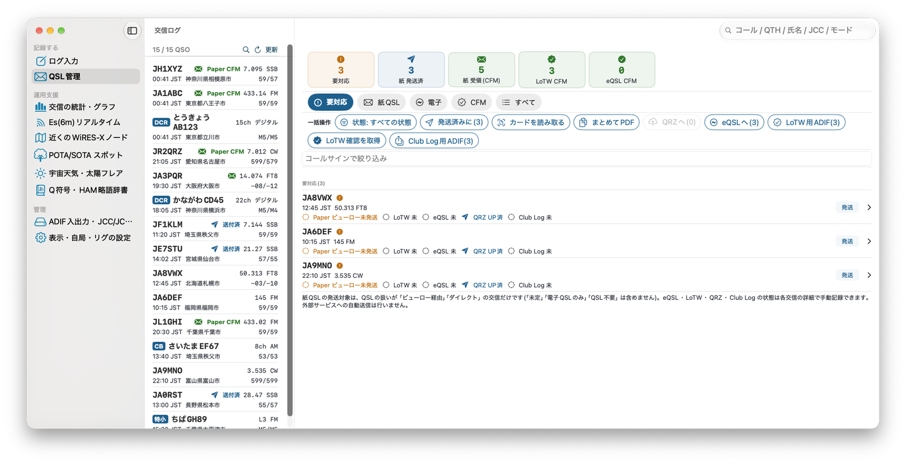
QSL管理（Mac）：上から件数のまとめ／絞り込み／一括操作／交信の一覧
画面の見かた
- 件数のまとめ：要対応・紙の発送済・紙の受領（CFM）・LoTW CFM・eQSL CFM の件数を表示します。
- 絞り込み：「要対応／紙QSL／電子／CFM／すべて」で切り替えます。コールサインでも絞り込めます。
- 要対応：QSLの扱いが「ビューロー経由」「ダイレクト」で、まだ発送していない交信などです。「未定」「電子QSLのみ」「QSL不要」の交信は紙の発送対象にしません。
- 一覧の各交信には、紙・LoTW・eQSL・QRZ・Club Log の状態が並びます。行を開くと詳細（下記）に進みます。
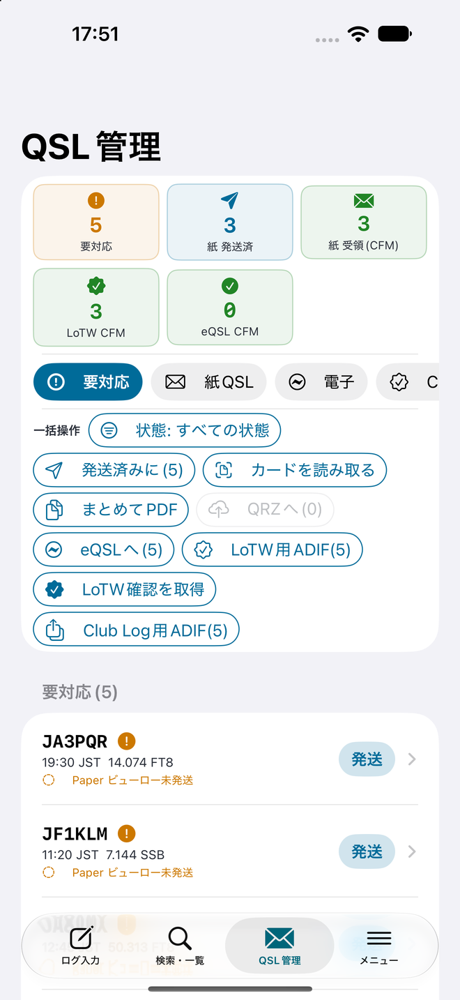
QSL管理（iPhone）
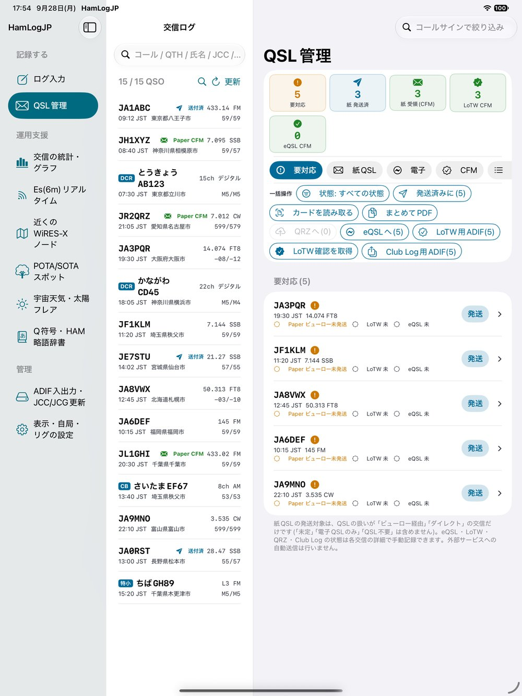
QSL管理（iPad）。一括操作のボタンは画面の幅に合わせて折り返します
一括操作
絞り込んだ交信に対して、まとめて操作できます（括弧内は対象の件数）。「設定 › QSL」で、一括操作の前に確認を出すかどうかを選べます。
- 状態：状態でさらに絞り込みます。
- 発送済みに：紙QSLをまとめて発送済みにし、発送日を記録します。
- カードを読み取る：届いたQSLカードの写真から受領を記録します（下記）。
- まとめてPDF：選んだ交信のQSLカードを1つのPDFにします。PDFの作成や印刷では、発送済みにはなりません。
- QRZへ／eQSLへ：QRZ.com ログブックへのアップロード、eQSL.cc への送信。
- LoTW用ADIF／LoTW確認を取得：LoTW への提出用ファイルの書き出しと、確認（QSL）の取り込み。
- Club Log用ADIF：Club Log にアップロードするファイルの書き出し。
交信ごとの詳細と履歴
一覧から交信を開くと、QSLの扱い（ビューロー経由・ダイレクト・電子QSLのみ・QSL不要・未定）、QSLマネージャー（QSL via）、QSLメッセージと、紙QSLの発送／受領の状態と日付、各オンラインサービスの状態を編集できます。
- 状態を変えても日付は自動では入りません。「今日の日付を記録」で入れます。
- 変更はすべて履歴に残り、いつ・何を変えたかをあとから確認できます。
QSLカードの作成・印刷
148×100mm（はがきサイズ）のQSLカードをPDFで作成し、共有できます。Mac からはそのまま印刷できます。詳細画面の「QSLカードをプレビュー」から確認できます。
届いたQSLカードを写真から記録
「カードを読み取る」で、写真ライブラリまたはファイルからカードの画像を選ぶと、コールサイン・日付・時刻・バンド・モードを読み取り、合っていそうな交信の候補を表示します。候補を選んで受領日を確かめ、「記録」を押すと紙QSLの受領（CFM）になります。
文字の読み取りは端末内だけで行い、画像や読み取った文字は保存・送信しません。写真ライブラリ全体へのアクセス許可も求めません。
電子QSL・オンラインログとの連携
各サービスのアカウントは、ご自身で登録してください。パスワードや APIキーはこの端末のキーチェーンにだけ保存し、iCloud には同期しません（端末ごとに登録します）。登録は「設定」の QSL の項目から行います。
- QRZ.com：「QRZ.com ログブック連携」に、QRZ.com のログブックの APIキーを登録すると、「QRZへ」でアップロードできます（日本語の項目は送りません）。
- eQSL.cc：「eQSL.cc 連携」にユーザー名（コールサイン）とパスワードを登録すると、「eQSLへ」で送信できます。
- LoTW（送る）：LoTW へは ARRL の署名ソフト TQSL で署名して送る決まりです。「LoTW用ADIF」でファイルを書き出し、TQSL で署名・アップロードします。Mac では TQSL を起動してファイルを表示します（TQSL の証明書と Station Location は事前に TQSL で設定してください）。iPhone・iPad で書き出したファイルは、AirDrop などで TQSL の入った Mac へ送ってください。
- LoTW（確認を取り込む）：「LoTW 確認の取得」に LoTW のWebサイトのユーザー名（通常はコールサイン）とパスワードを登録すると、「LoTW確認を取得」で確認済みの交信を取り込みます。コールサイン・バンド・時刻（前後30分）で照合し、変わるのは LoTW の「受信・確認」だけです。通常は前回以降の確認だけを取得します。
- Club Log：「Club Log用ADIF」で書き出したファイルを clublog.org でアップロードし、詳細画面で状態を記録します。
LoTW はアマチュア無線の交信だけが対象です（フリラーの交信は含めません）。国内の交信も登録できますが、相手局も LoTW に送っていないと確認にはなりません。
10統計・グラフ
月別・バンド別・モード別に交信を振り返れます。年間の交信数やアクティブなバンドがひと目で分かります。
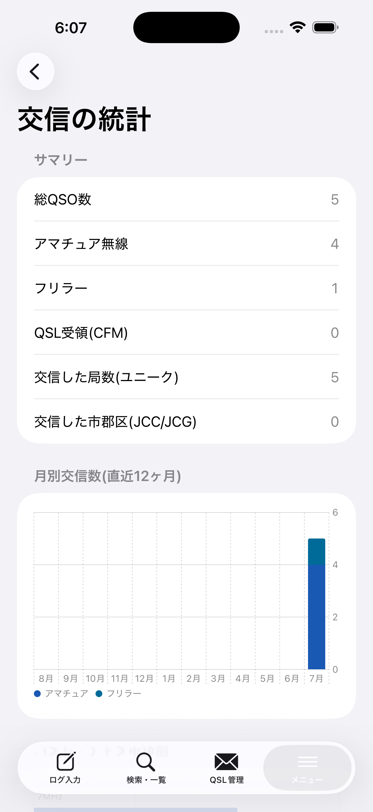
統計・グラフ（iPhone）
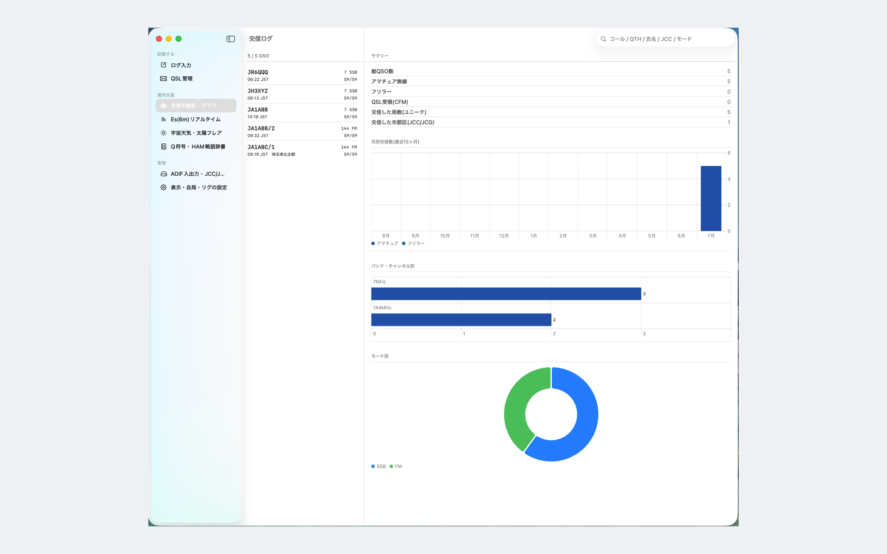
統計・グラフ（Mac）
12設定
iPhone は「メニュー › 設定」、Mac・iPad は左メニューの「表示・自局・リグの設定」から開きます。
- 自局・運用地：コールサイン・運用地・JCC/JCG などを登録。各QSOに自動で記録されます（移動運用のときだけ変更）。
- 既定のバンド・モードと表示するモード：入力画面に出すモードを全48種から選択（DV/D-STAR/C4FM/DMR も選択可）。
- リグの登録・管理：アマチュア機・フリラー機を複数登録でき、ログ入力で使用リグを選べます。
- ログ入力のプリセット：保存したプリセットの確認・削除（第5章）。
- 文字サイズ：標準／大きめ／特大。Mac では画面全体に反映されます。
- 配色・見やすさ：色だけに頼らず記号や濃淡でも区別する「ユニバーサルカラー」、文字や枠線を濃くする「高コントラスト表示」。
- QSL：一覧に QSL 状態のバッジを出すか、一括操作の前に確認するか。QRZ.com・eQSL.cc・LoTW のアカウント登録（第9章）。
- 単位：距離・気温の単位を切り替え。
- iCloud に保管（同期）：ご自身の端末間でログを同期。変更はアプリの再起動後に反映されます。
- サブスクリプション管理：プレミアムの購入・復元・管理。
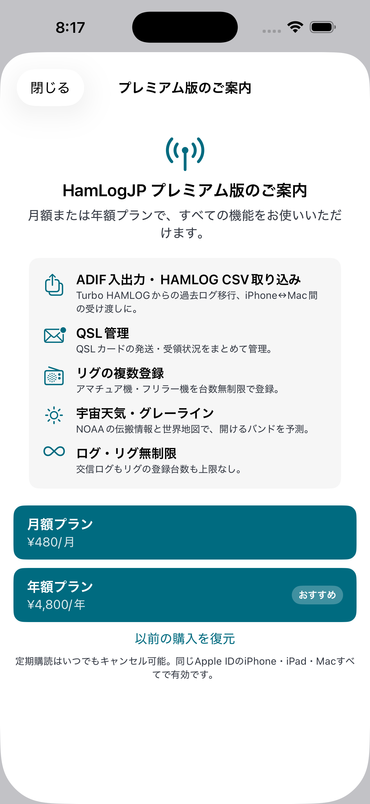
プレミアム案内
13料金・お問い合わせ
無料版 交信ログ 200 件まで／アマ・フリラーの記録／過去交信・重複表示／JCC・JCG 検索／統計グラフ
プレミアム ¥480/月・¥4,800/年：交信ログ無制限／ADIF 入出力・Turbo HAMLOG 取り込み／QSL 管理／6m Es・宇宙天気／iPhone・iPad・Mac 共通
ご質問・ご要望は下記のお問い合わせ先までお寄せください。アップデートで随時改善しています。